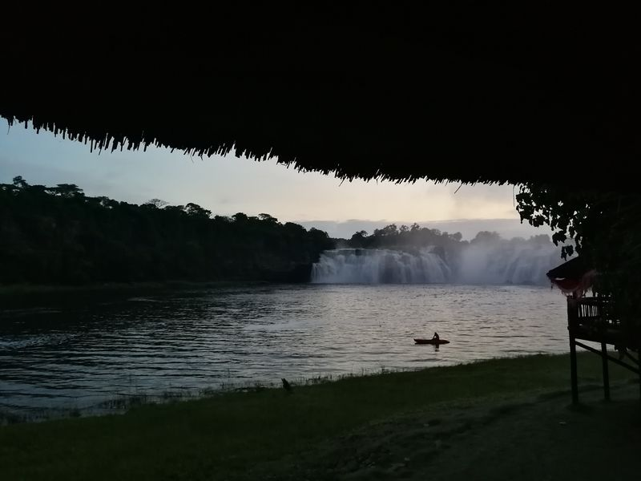
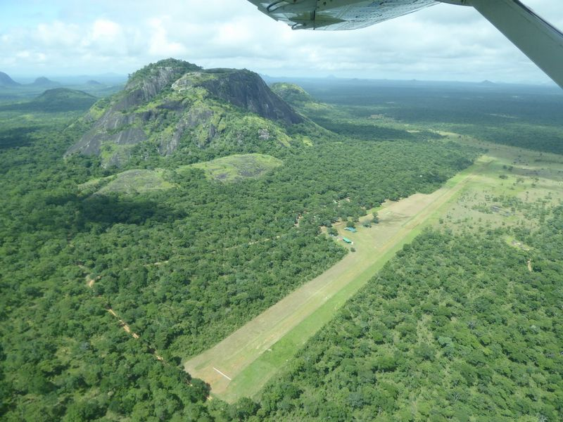
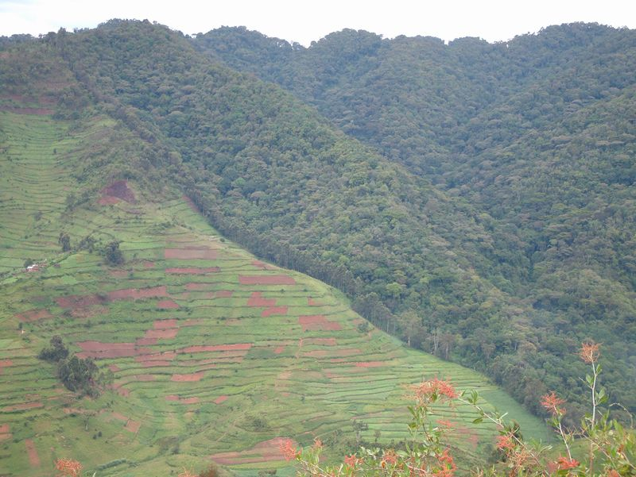
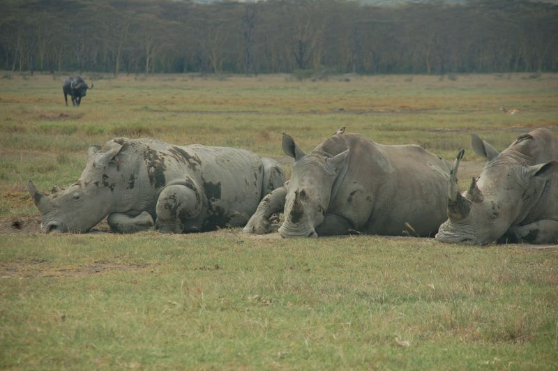
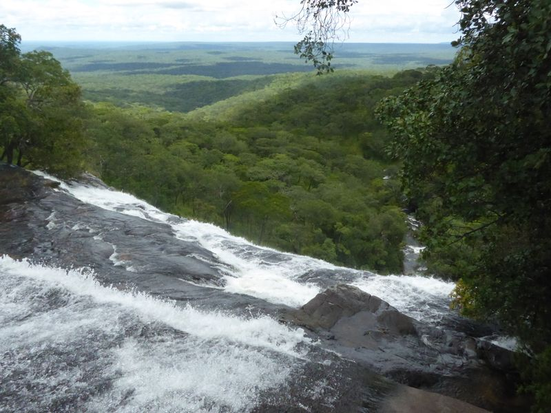
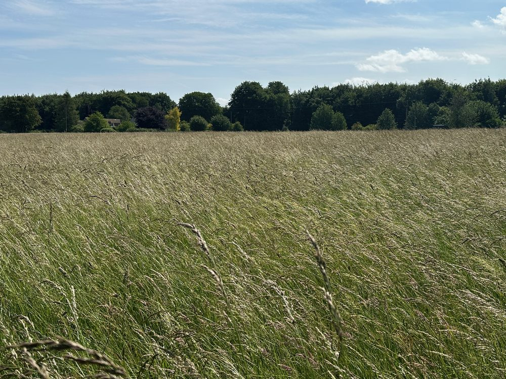
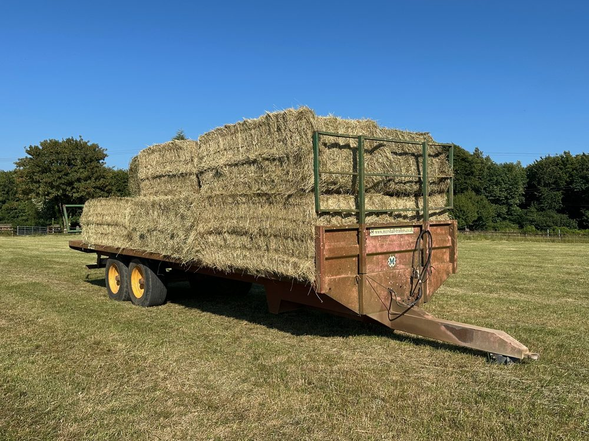
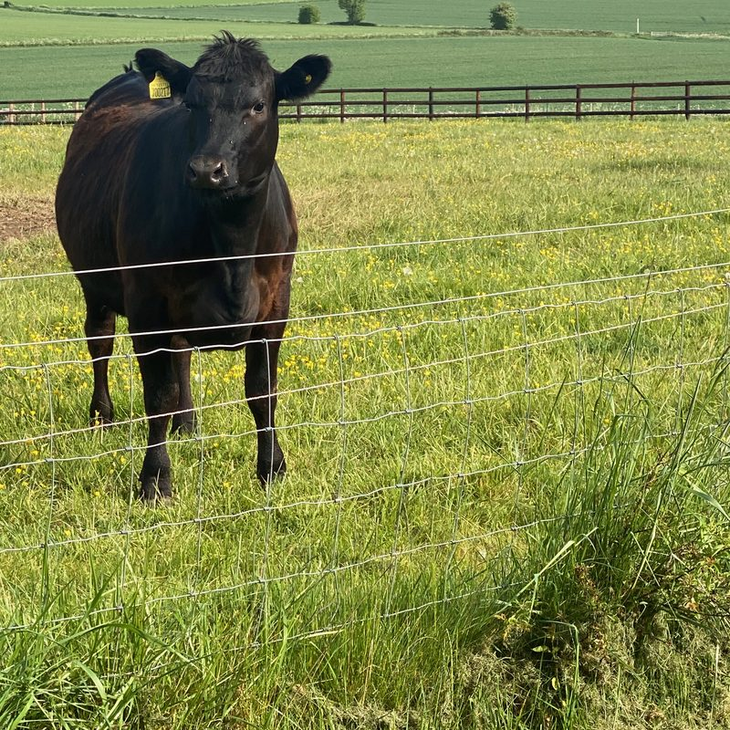
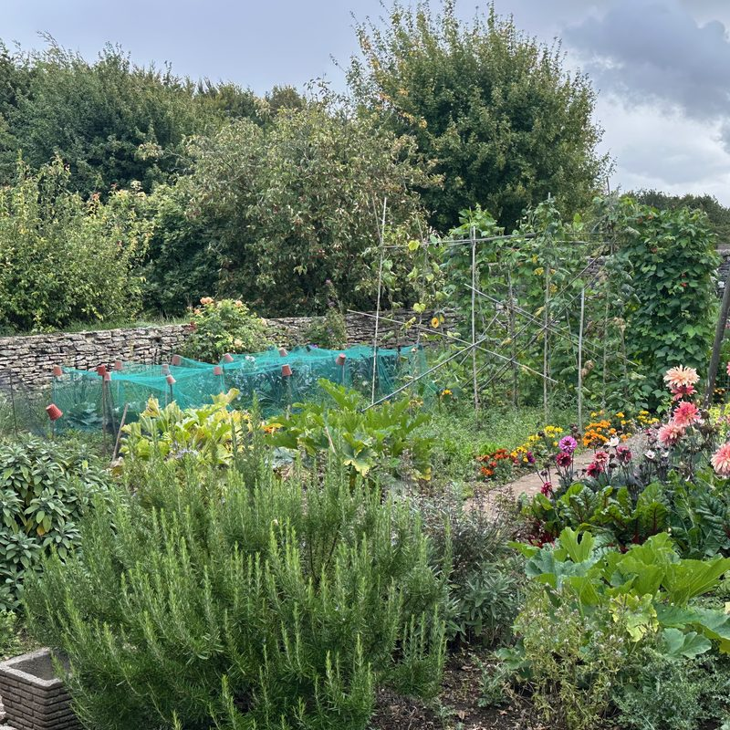
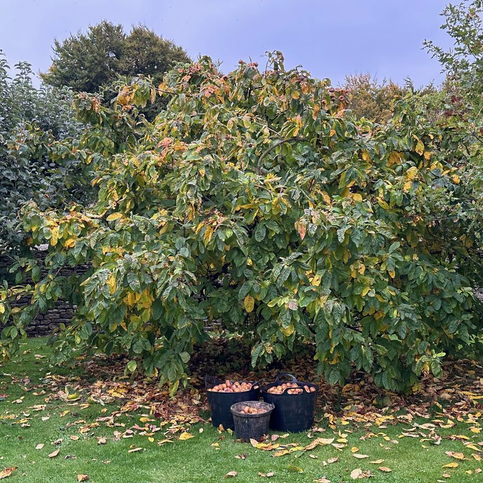

Turning conservation commitments into impact on the ground
Ecoimpacts is the independent advisory practice of Rob Craig, linking global conservation policy and finance with the practical reality of protecting nature on the ground. Based in the Cotswolds, working wherever conservation is hardest.
- Over 25 years advising governments, conservation NGOs, foundations and donor agencies
- Field-tested across Africa and Central Asia, from South Sudan and the DRC to Mozambique and Afghanistan
- Work spanning protected-area management, conservation finance, evaluation, and conflict-sensitive programming
This year: a global conservation progress review for the United Nations Environment Programme (UNEP), and national park planning support to the Wildlife Conservation Society (WCS) in the Central African Republic.
About
An advisory practice, not a firm
Ecoimpacts is the consulting practice of Rob Craig, an environmental and sustainable-development specialist based in the United Kingdom, providing analysis and field-based advisory services where nature conservation, governance, and peacebuilding meet.
Ecoimpacts works internationally with governments, conservation NGOs, foundations and donor agencies to strengthen the design, management and evaluation of programmes in complex ecological and social settings. It draws on more than 25 years of experience across Africa and beyond to offer practical, evidence-based consultancy aimed at measurable conservation and governance outcomes.
The core portfolio has been international. A growing share of the work now sits closer to home: UK conservation, regenerative land use, and sustainable rural enterprise, informed by hands-on practice at a smallholding in the Cotswolds.
Clients work directly with Rob, who brings in a trusted network of specialists and partner organisations when an assignment calls for more depth. That means senior attention from the first conversation to the final report, and advice grounded in having done the work, not only studied it. A consistent thread runs through it: technical know-how is necessary but rarely sufficient. Lasting impact depends on political buy-in, local ownership, and finance that holds once the external support ends. The aim is never an island of excellence that collapses when the funding stops, but something the people who live with it can carry forward.
Backstory
After degrees in geology and environmental economics at Edinburgh and Manchester, I spent 2001 and 2002 in Costa Rica, working for a smallholder organic farmers' association. The work promoted agro-ecological farming and marketing to support local livelihoods and the Mesoamerican Biological Corridor, focused on post-harvest quality control and organic and fairtrade certification.
I then moved to Kenya for what became, in hindsight, an eight-year apprenticeship in conservation, working for a small consultancy that provided technical support to conservation and natural-resource-management initiatives across eastern Africa.
From 2010 to 2017 I worked for the Wildlife Conservation Society, helping establish and strengthen national protected-area systems in South Sudan and Afghanistan as part of post-conflict reconstruction, and leading on the ground WCS's co-management partnership with the government of Mozambique in the Niassa Reserve.
My last major overseas posting, from 2018 to 2021, was in the DR Congo, supporting the rehabilitation and development of the Upemba and Kundelungu National Parks: securing funding from bilateral, multilateral and private donors, and advising on park operations.
In 2021 I returned to my family roots in the Cotswolds, where I continue to advise on international conservation initiatives under the Ecoimpacts brand while managing a smallholding.
Services
Eight areas of advisory support
Technical and strategic support joining field experience to strategic, policy and institutional perspective. Underpinned by research, analytical thinking, writing, workshop facilitation, capacity building, mentoring and communications.
Conservation area management
Protected areas managed well enough to last.
Strengthening protected-area systems for better management effectiveness, operational resilience and biodiversity outcomes, with first-hand experience of delegated and co-management partnerships between governments and international partners.
Conservation planning
Plans that are practical, fundable, and built to be delivered.
Integrated, participatory planning that links ecological priorities, operations and finance, from General Management Plans to business plans and strategic frameworks, including securing political approval and gazettement.
Project design and management
End-to-end delivery, from concept to evaluation.
A strong record across the full project cycle, from concept design and proposal writing through implementation, reporting and evaluation, including service as Chief of Party on large USAID projects and lead on multilateral and private grants.
Monitoring and evaluation
Know what is working, and show it.
M&E systems that help organisations understand and demonstrate performance and conservation impact, and feed learning back into decisions. Co-author of the GEF Review of Outcomes to Impact (ROtI) framework and manual.
Institutional strengthening
Organisations fit to carry the mission.
Aligning organisational structure, governance and performance with conservation impact, and building the partnerships and policy frameworks that let good work happen.
Conservation financing
Funding that is durable and well governed.
Developing and evaluating conservation trust funds and their governance, alongside advisory work on business and biodiversity and private-sector engagement.
Natural resource-based enterprise
Making the business case for conservation real.
Designing and evaluating initiatives that link livelihoods to biodiversity, strengthening the case for conservation-compatible development through value-chain analysis and green-economy design.
Risk, conflict-sensitivity & peacebuilding
Working effectively where the context is fragile.
Helping organisations operate in fragile and conflict-affected settings through conflict and risk analysis, conflict-sensitive design, and peace-positive programming. Co-author of IISD's conflict-sensitive conservation guidance.
Selected Work
How the services come together in practice
A selection of assignments spanning national park complexes, post-conflict reconstruction, donor-funded programmes, and independent evaluations.

Upemba & Kundelungu National Parks
Rehabilitation and governance planning for a 33,000 km² multi-park complex under a delegated management partnership with ICCN, and co-authorship of a business plan integrating ecological and financial systems.

Niassa Special Reserve
Reserve Manager and WCS Programme Director for the co-management partnership with Mozambique's wildlife authority (ANAC), with continuing advisory support to 2025.
Protected-area network reconstruction
Re-establishing national conservation-area networks, wildlife and tourism policy and law, and pilot multi-sectoral land-use planning with Jonglei State.

Review of Outcomes to Impact (ROtI)
Developing and piloting the ROtI post-project assessment methodology across seven countries; co-author of the framework and manual.

Cross-Regional Wildlife Conservation Evaluation
Wildlife expert on the joint evaluation team for the EU-funded programme implemented by UNODC, CITES and CMS.

Operating Framework for Fragile States
Country reviews to inform WWF International's operating framework for working in fragile and conflict-affected states.
A fuller portfolio is available on request.
Insights
Selected published work
Work co-authored over the years, for those who want the detail behind the practice.
- Todd, D. and Craig, R. (2021). ‘Assessing Progress towards Impacts in Environmental Programmes Using the Field Review of Outcomes to Impacts Methodology’, in J. Uitto (ed.), Evaluating Environment in International Development (2nd ed.). Routledge. Routledge ↗
- Allan, J.R., Grossman, F., Craig, R., et al. (2017). ‘Patterns of forest loss in one of Africa’s last remaining wilderness areas: Niassa National Reserve, northern Mozambique’, PARKS 23.2. IUCN. PARKS journal ↗
- Conservation Development Centre and GEF Evaluation Office (2010). The ROtI Handbook: Towards Enhancing the Impacts of Environmental Projects. GEF Evaluation Office, Washington DC. PDF ↗
- Campbell, I., Dalrymple, S., Craig, R. and Crawford, A. (2009). Climate Change and Conflict: lessons from community conservancies in northern Kenya. IISD and Saferworld. IISD ↗
- Hammill, A., Crawford, A., Craig, R., Malpas, R. and Matthew, R. (2009). Conflict-Sensitive Conservation Practitioners’ Manual. IISD, Winnipeg. IISD ↗
From the Cotswolds
Practising what the work advises
I live on a five-acre smallholding in the south Cotswolds, with grazing for cattle and sheep, a walled vegetable garden, a small orchard and a wildlife pond. The aim is to make it more self-sufficient and resilient, drawing on regenerative and permaculture principles.
It also keeps the international work honest. The same questions of stewardship, resilience and trade-off show up here, at a scale you can walk across in an afternoon.





Contact
Start a conversation
If you are commissioning advisory work, scoping a programme, or looking for an experienced hand in a difficult context, I would be glad to hear from you.
- Email: enquiries@ecoimpacts.com
- LinkedIn: linkedin.com/in/robhcraig · Ecoimpacts company page
- Based in the Cotswolds, United Kingdom, working internationally.